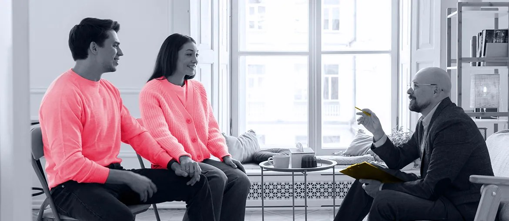

1
Six-week pilot
Map AI use cases to referrals, benefits, and data exchange flows so model work stays tied to care outcomes.
Findhelp x Elinext
Saw Findhelp hiring senior staff engineering talent as Girish leads AI. That usually means core platform work, data pipelines, and responsible AI features must keep moving during a hard search.
The Senior Staff signal says Findhelp is adding senior judgment, not just more hands. Your platform now spans referrals, benefits, data exchange, and trusted networks, so AI work must fit live care workflows. The bottleneck is likely architecture capacity across model work, integrations, privacy, and mobile follow-up. If that load sits only with the core team, roadmap items slow and support noise grows.
Engagement model: a dedicated bridge squad under your Product Owner or PM, built to protect delivery while you hire.
Map AI use cases to referrals, benefits, and data exchange flows so model work stays tied to care outcomes.
Build one matching or follow-up workflow with audit logs, privacy checks, and weekly demos for Girish's team.
Harden platform APIs and data jobs that feed recommendations, alerts, and trusted network routing under real load.
Add automated QA around referral states, Google sign-in, and mobile handoffs so fixes do not reopen old issues.
Elinext is a full-cycle software development company, active since 1997, with about 700 in-house specialists and no freelancers. For Findhelp, the fit is senior backend, web, QA, and AI/ML engineers who can join under your Product Owner or PM. We hold ISO 9001 and ISO 27001, useful when work touches health data, referrals, and user trust. Our teams have served Siemens, Broadcom, Volkswagen, and TUI. That gives the bridge squad above a real delivery base, not a staffing-only frame.

Healthcare AI work using FastAPI, Python, Angular, LangChain, LangGraph, Qdrant, and model optimization.
Read the case study
A healthcare workflow platform reduced manual work and improved tracking with Python, React, PostgreSQL, and AWS.
Read the case study